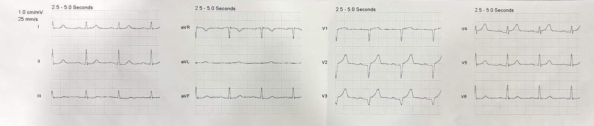
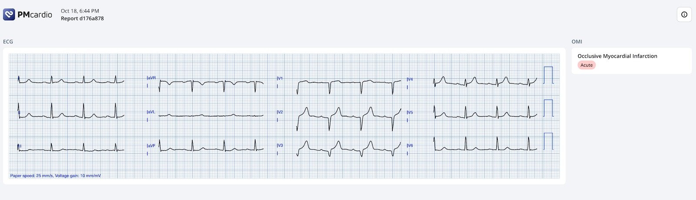
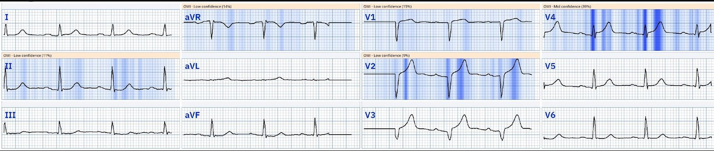
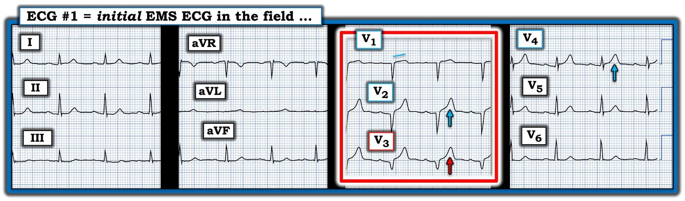

27/10/2024 — Kích hoạt từ trước viện: Bị bác sĩ tim mạch hủy kích hoạt khi đến khoa cấp cứu vì “Đây không phải STEMI”
Bản dịch tiếng Việt của bài "Prehospital activation: De-activated on ED arrival by Cardiologist because “It’s not a STEMI”" – Dr. Smith’s ECG Blog. Giữ nguyên toàn bộ 5 hình ảnh của bản gốc.
Ca này do một nhân viên cấp cứu ngoài viện (paramedic), Hailey Kennedy, gửi đến
Một nam giới cuối độ tuổi 50 gọi 911 sau 2 giờ đau ngực, khởi phát khi đang làm việc tại bàn. Ông kể cơn đau ngực kiểu bóp nghẹt lan xuống cánh tay trái. Bệnh nhân đã uống một viên thuốc kháng acid nhưng không đỡ và quyết định gọi cấp cứu theo yêu cầu của vợ.
Đây là điện tâm đồ do đội cấp cứu ngoài viện (EMS) ghi:


Bạn nghĩ gì?
Điện tâm đồ này được gửi cho tôi mà không kèm thông tin lâm sàng nào, và ấn tượng ban đầu của tôi khi xem trên điện thoại là “Ca này khó đây. Tôi ngờ ngợ rằng nó là giả.” Nhưng rồi tôi xem kỹ hơn và trả lời: “Giờ tôi đang xem kỹ hơn và tôi thực sự nghĩ đây là OMI vì các chuyển đạo dưới.”
Diễn giải của Smith: có sóng QS ở V2,3 và sóng T rất lớn. Sóng QS gợi ý nhồi máu cũ đã hoàn tất, nhưng tôi đã chứng minh trong 2 bài báo rằng nhồi máu cũ đã hoàn tất có sóng T nhỏ so với QRS là cấp, không phải cũ [người dịch: câu gốc có vẻ thiếu chữ; ý là nhồi máu cũ có sóng T nhỏ so với QRS, còn sóng T lớn so với QRS thì là cấp, không phải cũ] (tỷ lệ T/QRS ở bất kỳ một chuyển đạo nào trong V1-4 mà > 0.36 là cấp cho đến khi chứng minh được điều ngược lại, nghiên cứu xây dựng và nghiên cứu thẩm định). Các chuyển đạo dưới có sóng T dạng xuống-lên (down-up) rất kín đáo, và trong bối cảnh sóng T to/đầy đặn ở V2, những sóng này có giá trị chẩn đoán OMI do LAD cho đến khi chứng minh được điều ngược lại, miễn là tình huống lâm sàng phù hợp. Bệnh sử lâm sàng của bệnh nhân này hoàn toàn điển hình cho OMI cấp.
Nhân viên cấp cứu ngoài viện nghĩ đây là OMI do LAD nhưng không chắc chắn. Vì vậy cô gửi nó cho Queen of Hearts:


Kết quả ở đây không ghi mức độ tin cậy, nhưng ở lần gửi của cô thì ghi “high confidence” (độ tin cậy cao). Ở lần gửi của tôi thì ghi “Mid confidence” (độ tin cậy trung bình).
Tôi không chắc vì sao có sự khác biệt này. Nếu gửi đúng cùng một hình ảnh thì kết quả sẽ giống nhau. Vậy hẳn phải có khác biệt nhỏ nào đó giữa các hình ảnh.
Đây là bản đồ giải thích (“salience” – bản đồ nổi bật):


Cô ấy “thấy” sóng T tối cấp ở chuyển đạo V2 và V4, sóng R nhỏ ở V4 với sóng T lớn và đối xứng không tương xứng, và đoạn ST dốc xuống soi gương (reciprocal) ở chuyển đạo III.
Không có vùng tô sáng ở sóng T tối cấp tại chuyển đạo V3.
Bấm vào đây để đăng ký sử dụng Queen of Hearts.
Nhân viên cấp cứu ngoài viện kể tiếp: “Điện tâm đồ ban đầu đáng lo ngại cho OMI do ST chênh lên V1-4, sóng T tối cấp V3-4. Bệnh nhân được dùng 324 ASA và 2 nhát xịt nitro, có cải thiện. Phòng thông tim (cath lab) đã được EMS kích hoạt và bệnh nhân được vận chuyển cấp cứu.”
Phòng thông tim đã bị bác sĩ tim mạch hủy kích hoạt khi bệnh nhân đến khoa cấp cứu (ED) vì “không phải STEMI”.
Diễn biến tiếp theo:
Bệnh nhân tiếp tục đau và được bắt đầu truyền NTG. Cơn đau giảm xuống 2/10. Troponin I thế hệ thứ 4 ban đầu < LoD (giới hạn phát hiện; không phát hiện được). Troponin lúc 2 giờ là 1.14 ng/mL, sau đó 9.06 ng/mL, rồi 16.97 ng/mL. Không lấy được troponin đỉnh. Bất kỳ giá trị troponin I thế hệ thứ 4 nào > 10 ng/mL đều phù hợp với nhồi máu lớn do tắc cấp động mạch vành (OMI).
Đây là ghi chép của khoa tim mạch, đã được diễn đạt lại để không nhận dạng được bệnh nhân:
Bệnh nhân khoảng 50 tuổi được hội chẩn tim mạch hôm nay theo yêu cầu của Dr. XXXXXX vì NSTEMI.
Ông có các chẩn đoán tăng lipid máu, tăng huyết áp và đái tháo đường. Ông đến khoa cấp cứu để đánh giá đau ngực. Khi đến, cơn đau đã đỡ nhưng chưa hết.
Bệnh nhân kể ngực bắt đầu khó chịu từ buổi sáng. Đau ngực ngày càng nặng hơn trong ngày. Đau ở giữa ngực và ngực trái, lan ra cánh tay trái, kèm vã mồ hôi lạnh và buồn nôn khiến ông gọi 911 và được xe cứu thương đưa đến khoa cấp cứu.
Lúc đó mức độ đau khoảng 6/10 và ông đã uống vài viên thuốc kháng acid nhưng không đỡ. Bệnh nhân cho biết cơn đau đỡ trên đường đi xe cứu thương sau khi được dùng 325 mg Aspirin và nitroglycerin, đau giảm xuống 2/10. Khi ở khoa cấp cứu, cơn đau của bệnh nhân nặng lên trở lại mức 6/10 như trước và giảm xuống 3/10 khi truyền NTG.
CT mạch máu ngực
NHẬN ĐỊNH
1. Không có máu tụ, phình hay bóc tách động mạch chủ ngực. Không phát hiện thuyên tắc phổi.
2. Có vôi hóa động mạch vành mức độ vừa.
Chỉ sau khi troponin tăng lên mức rất cao, bệnh nhân mới được chụp mạch vành vào ngày hôm sau.
Bất kể các dấu hiệu trên điện tâm đồ [người dịch: nguyên văn ghi “fingings”, nhiều khả năng là lỗi đánh máy của “findings”], cách xử trí này không tuân theo hướng dẫn của ACC, vốn nêu rằng bất kể điện tâm đồ cho thấy gì, nếu có nhồi máu cấp và đau dai dẳng thì bệnh nhân phải được đưa vào phòng thông tim trong vòng 2 giờ.
Đáng tiếc là trong thực tế, các hướng dẫn này hiếm khi được tuân thủ. Lupu và cs. (xem bên dưới) cho thấy chỉ 6% các trường hợp “NSTEMI nguy cơ cao” lẽ ra phải vào phòng thông tim trong vòng dưới 2 giờ thực sự được xử trí phù hợp như vậy.
Một nghịch lý trong y văn:
Tất cả các thử nghiệm về can thiệp rất sớm cho NSTEMI mà không loại trừ bệnh nhân đau ngực dai dẳng đều cho thấy can thiệp trong < 2 giờ mang lại kết cục tốt hơn.
Họ loại trừ bệnh nhân đau ngực dai dẳng vì các hướng dẫn khuyến cáo như vậy.
Nhưng trong thực tế, ngoài các thử nghiệm lâm sàng, những bệnh nhân này không được can thiệp cấp cứu.
Và vì thế nhiều thử nghiệm dù vậy vẫn báo cáo rằng “can thiệp sớm không tạo ra khác biệt,” và họ đi đến kết luận sai lầm đó vì chỉ tuyển những bệnh nhân đã hết đau ngực (hoặc, trong một số nghiên cứu, vì can thiệp bị trì hoãn quá lâu: từ 5-16 giờ sau khi nhập viện).
Do đó, những bệnh nhân “NSTEMI” còn đau dai dẳng, nhiều người trong số đó có OMI cấp, không được xử trí nhanh vì các bác sĩ tim mạch được dạy rằng can thiệp sớm cho NSTEMI không tạo ra khác biệt.
Đây là một tình thế “Catch-22” (tiến thoái lưỡng nan).
Chụp mạch vành:
Cho thấy LAD tắc mạn tính với tuần hoàn bàng hệ từ phải sang trái (nói cách khác, vùng cấp máu của LAD được RCA nuôi). Có tổn thương thủ phạm cấp tính tắc 100% (dòng chảy TIMI-0) ở RCA đoạn xa (xa đến mức chỉ ảnh hưởng thành trước, không ảnh hưởng thành dưới).
RCA không phải là mục tiêu tốt cho PCI, nên họ đã mở thông thành công LAD tắc mạn tính (đây không phải là một thủ thuật dễ).
Nhánh bờ tù thứ nhất cũng hẹp 80% và đã được đặt stent.
Như vậy đây là OMI của vùng cấp máu LAD, được nuôi bởi RCA thủ phạm.
Nhưng họ mở thông động mạch SAU KHI tổn thương đã xảy ra. Giống như mất bò mới lo làm chuồng.
Tài liệu tham khảo: Lupu L, Taha L, Banai A, Shmueli H, Borohovitz A, Matetzky S, Gabarin M, Shuvy M, Beigel R, Orvin K, và cs. Immediate and early percutaneous coronary intervention in very high-risk and high-risk non-ST segment elevation myocardial infarction patients. Clin. Cardiol. [Internet]. 2022; Truy cập tại: https://onlinelibrary.wiley.com/doi/10.1002/clc.23781
Bấm vào đây để đăng ký sử dụng Queen of Hearts.

===================================
BÌNH LUẬN CỦA TÔI, bởi KEN GRAUER, MD (27/10/2024):
===================================
Tôi thấy ca hôm nay thật đáng tiếc. Bất kể các điện tâm đồ sau đó có thể cho thấy gì — nhu cầu thông tim kèm PCI kịp thời đã được xác lập ngay lập tức bởi: i) Bệnh sử của ca hôm nay ( = đau ngực kiểu bóp nghẹt khởi phát đột ngột, không đỡ với thuốc kháng acid — kéo dài 2+ giờ); và, ii) Điện tâm đồ EMS ban đầu — mà tôi đã tái hiện và ghi chú trong Hình 1.
- Với điện tâm đồ EMS ban đầu này được ghi trong lúc đau ngực (CP) dữ dội vẫn tiếp diễn — chẩn đoán OMI cấp được mặc định cho đến khi thông tim chứng minh điều ngược lại. Không cần thêm xét nghiệm nào để “củng cố” chẩn đoán này — vì về cơ bản chẩn đoán OMI cấp đã được xác lập bởi điện tâm đồ ban đầu này.
- LƯU Ý: Ngay cả khi triệu chứng của bệnh nhân này hết hoàn toàn, và điện tâm đồ ở Hình 1 có “bình thường hóa” — điều đó cũng hoàn toàn không phủ định chẩn đoán OMI cấp và nhu cầu thông tim kịp thời. Ngược lại, sự cải thiện (kể cả bình thường hóa) của các thay đổi ST-T ở Hình 1 — sẽ củng cố chẩn đoán OMI cấp bởi đó sẽ là thay đổi ST-T động (dynamic) gợi ý tái tưới máu tự phát (dù vậy vẫn có nguy cơ cao rằng vào bất kỳ lúc nào — tình trạng “tắc lại” tự phát có thể xảy ra, do đó cần PCI khẩn để ngăn chặn điều này).
VÌ SAO điện tâm đồ #1 + Bệnh sử Lâm sàng này Có giá trị Chẩn đoán OMI cấp?
“Con mắt” của tôi ban đầu bị thu hút vào chuyển đạo V3 ở Hình 1 — và ngay sau đó tới 2 chuyển đạo còn lại trong hình chữ nhật MÀU ĐỎ trên bản ghi này:
- Nhận thấy rằng sóng QS ở các chuyển đạo V1,V2,V3 có thể phản ánh nhồi máu trước vách cũ — thì sóng T to quá mức và “đầy đặn” quá mức không tương xứng ở chuyển đạo V3 không thể nào là bình thường, khi phức bộ QRS ở chuyển đạo này rất nhỏ.
- Chuyển đạo V2 kế bên cũng biểu hiện sóng T to không tương xứng (“quá đầy đặn” (hypervoluminous)), xét theo biên độ QRS khiêm tốn ở chuyển đạo này.
- Trong bối cảnh các sóng T tối cấp này ở chuyển đạo V2,V3 — ST chênh lên nhẹ nhưng có thật kèm ST thẳng đuỗn ở chuyển đạo V1 cũng bất thường, và gợi ý có tổn thương vùng vách.
- Và, trong bối cảnh các bất thường này ở chuyển đạo V1,V2,V3 — mũi tên MÀU XANH ở chuyển đạo V4 kế bên chỉ ra thêm một sóng T tối cấp nữa ở chuyển đạo trước tim.
- Thay đổi ST-T kín đáo hơn hẳn ở các chuyển đạo chi. Dù vậy, với các dấu hiệu bất thường ở chuyển đạo trước tim nêu trên — tôi diễn giải ST dẹt kín đáo kèm chênh xuống nhẹ ở các chuyển đạo dưới là thay đổi soi gương — điều này còn được củng cố thêm bởi sóng T rộng không tương xứng ở chuyển đạo aVL (xét đến việc biên độ QRS ở chuyển đạo aVL là một véc-tơ triệt tiêu không nhìn thấy được).
ĐIỀU CỐT LÕI: Với bệnh sử đau ngực (CP) mới xuất hiện, dữ dội và dai dẳng — tôi diễn giải điện tâm đồ ở Hình 1 là có giá trị chẩn đoán tắc cấp LAD đoạn gần cho đến khi chứng minh được điều ngược lại.
- Hẳn đã rõ rằng việc trì hoãn quyết định thông tim cho bệnh nhân hôm nay sẽ không thay đổi được nhu cầu cần làm thủ thuật này. Vậy thì chờ đợi làm gì?
- T.B. (P.S.): Tôi thấy kết quả thông tim cuối cùng cũng được thực hiện đặc biệt sâu sắc, cho thấy tác động khó lường mà các kiểu tuần hoàn bàng hệ bất thường có thể gây ra đối với vùng tổn thương cơ tim sau cùng (tức là, tắc cấp RCA đoạn xa trong ca hôm nay — đã gây ra OMI vùng LAD vì tuần hoàn bàng hệ từ RCA vẫn đang duy trì việc cấp máu cho LAD).

